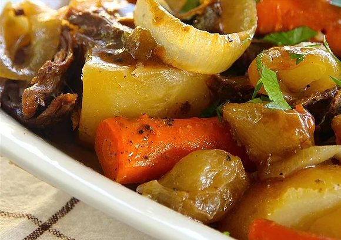

Pot Roast

Description
This is the oven version that is the original I got from my mother. It is unbelievably delicious.
Ingredients
- 1 tablespoon vegetable oil
- 1 (4 pound) beef pot roast
- 1 tablespoon brown sugar
- 1 tablespoon salt
- 1 tablespoon dry mustard
- ¼ teaspoon black pepper
- 3 large potatoes, quartered
- 3 carrots, peeled and cut into 2-inch pieces
- 1 onion, sliced
- ⅓ cup vinegar
- ⅓ cup water
Steps
- Preheat oven to 325 degrees F (165 degrees C).
- Heat vegetable oil in a Dutch oven over medium heat. Cook beef in Dutch oven until browned on all sides, 2 to 3 minutes per side.
- Mix brown sugar, salt, mustard, and black pepper together in a small bowl; sprinkle evenly over the roast. Arrange potatoes, carrots, and onion in the Dutch oven around the roast. Pour vinegar and water over the vegetables.
- Place a cover on the Dutch oven and put in preheated oven. Cook until the roast is hot in the center, and just turning from pink to grey, about 4 hours. An instant-read thermometer inserted into the center should read 150 degrees F (65 degrees C).